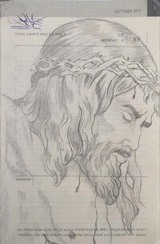
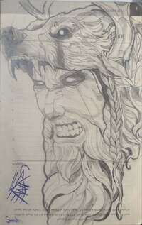
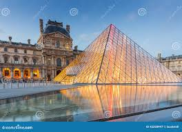
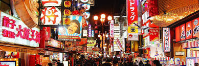
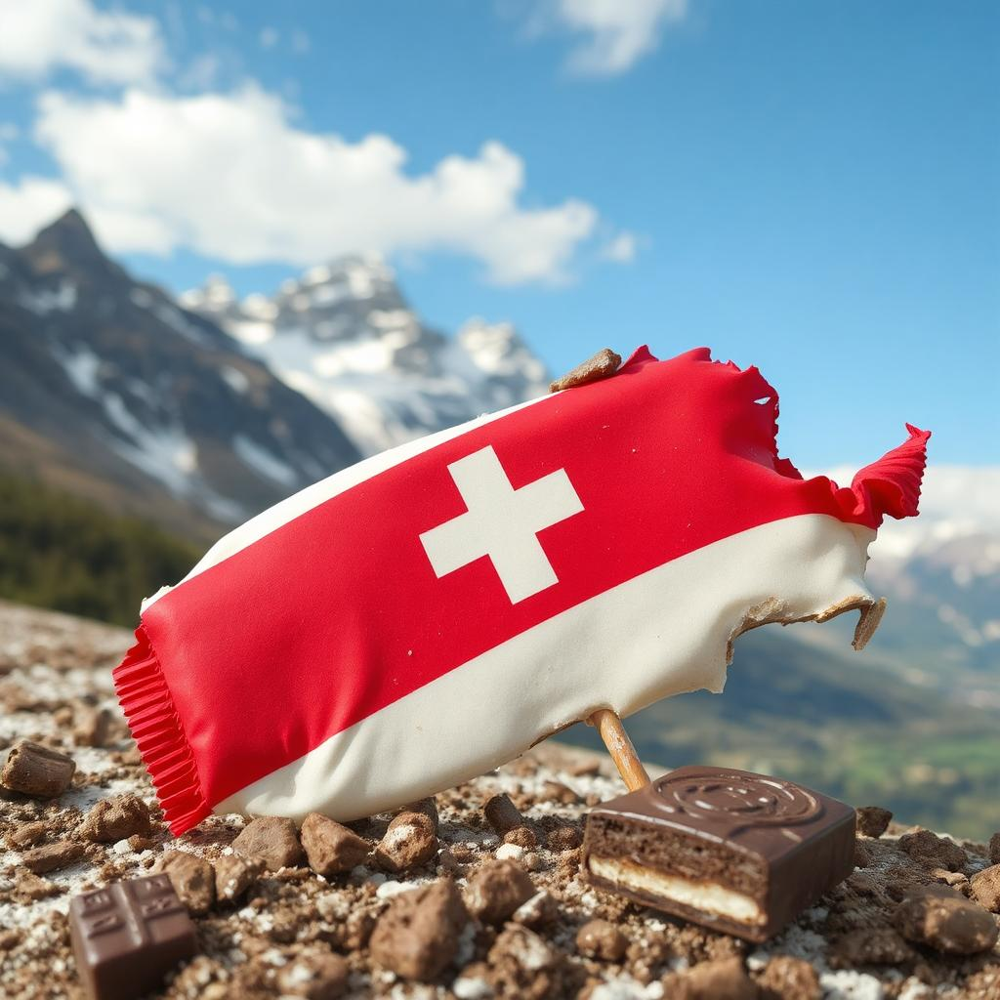
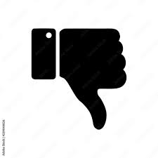

Hobbies
I have many hobbies, but listing all of them would take up too much space. Here are the top three hobbies that I enjoy the most.
Drawing
Art has always been very important to me. I began doing it as a child, and I've gotten much better over the years. Here are some of my pieces of art:
 Video games
Playing video games is a fantastic way to kill time and unwind. I don't play games to compete, but only for fun and enjoyment.
Roller skating
I have developed a deep affection for roller skating, a relatively new pastime. It's a sport that demands tenacity because progress frequently occurs following numerous setbacks. It accurately depicts life.

Travel
This section showcases my favorite locations, whether I've been there already or have travel plans to see them.
France
France, the land of art, is a destination I dream of visiting for its incredible museums. Although some of the art pieces were acquired controversially, its cultural richness is unparalleled.
Japan
As a hub for manga and anime art, Japan is another place I’d love to explore. Learning about the creative processes behind their art would be an incredible experience.
Switzerland
Switzerland is on my list for one main reason: its world-famous, delicious chocolates.
Like and Dislike
| Like | Dislike |
|---|---|
|

|
Dream
Like many others, I aspire to be financially independent, retire by the age of fifty, and give my family a good existence. But my goal is more than just financial security. Without the limitations of daily job, I want to build a life where I can have greater flexibility, spend time with loved ones, and follow my passions. I hope to see destinations I've always wanted to see, learn about other cultures, and acquire experiences that will broaden my horizons and improve my quality of life. Being financially independent will enable me to contribute to worthwhile projects, educate others, or support causes close to my heart. Essentially, my goal is to use my riches to build a healthy, satisfying life rather than merely accumulating it.